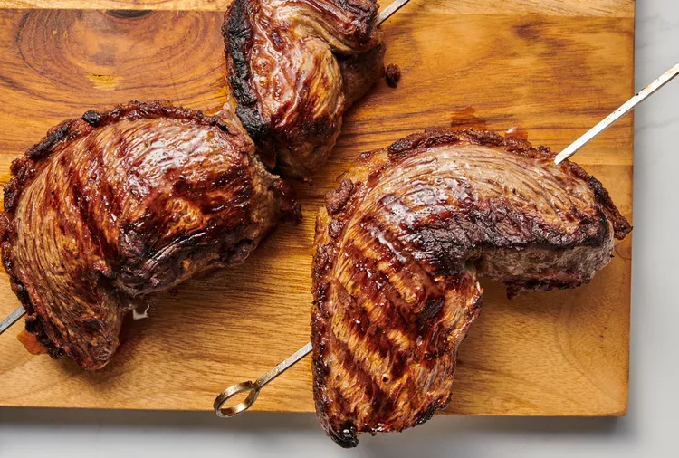

Picanha

What is Picanha?
The top sirloin cap is also known as picanha (pronounced "pee-KAHN-ya")—the specialty of a
churrascaria
or Brazilian steakhouse.
The flavorful meat is skewered, grilled, and sliced before serving.
It's relatively inexpensive, especially when compared to ribeyes and other notable steaks, and is packed with
beef flavor.
Ingredients
- 3 to 4 pounds picanha beef
- 1 1/2 Tablespoons kosher salt, divided
- Freshly ground black pepper, to taste
- High heat oil, for greasing the grill
Instructions
- Gather the ingredients.
- If the steak has been refrigerated, take it out 1 hour before you preheat the grill and let it come to room
temperature.
- Lay the top sirloin cap flat on a cutting board or another work surface, fat-side up. Using a small sharp
knife, cut the fat layer, without cutting to the meat, in a cross-hatch pattern, as you would do for a ham.
- Massage 1 tablespoon of salt into crevices of the cross-hatched fat layer of the steak. Season with freshly
ground black pepper.
- If you want to skewer the steak, cut the steak lengthwise into three equal pieces.
- Roll each steak piece like a jelly-roll and, using a large metal skewer, secure the steak so it holds
together rolled up. Sprinkle the remaining salt over the unseasoned sides of the steak.
- Preheat the grill to high. Clean the grates well and apply a thin layer of oil using a brush or paper towel.
Lay the skewered picanha on the grill and turn off all heat except for the one burner furthest away from the
steaks. Alternatively, heat a charcoal grill until very hot before carefully scraping the coals to
the back of the grill. Immediately add the steak to the front side of the grill
- Cook the steaks—with the grill cover closed—for 20 to 25 minutes, turning them every 5 to 7 minutes to
ensure even cooking. When the internal temperature reaches 128 F to 130 F for medium-rare on an
instant-read thermometer, take the picanha off the grill.
- Let the steaks rest 5 minutes, then remove from the skewer and slice against the grain and serve.